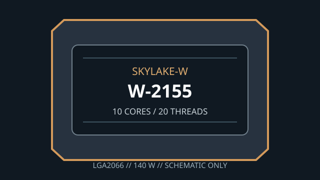

[ INDIVIDUAL WORKSTATION CPU ]
Intel Xeon W-2155
Skylake-W (Xeon W-2100 series), 2017. Exact model: Intel Xeon W-2155. 10 cores/20 threads; 3.30 GHz base / 4.50 GHz maximum turbo; 13.75 MB cache; 140 W TDP; LGA2066.

MODEL ID: Intel Xeon W-2155. Check the full model, stepping and board BIOS against manufacturer documentation before use.
Model specifications
| Architecture / generation | Skylake-W, Xeon W-2100 workstation generation (2017) |
|---|---|
| Exact part | Intel Xeon W-2155 |
| Package / socket | FC-LGA2066 (LGA2066 / Socket R4) |
| Compute and clocks | 10 cores / 20 threads; 3.30 GHz base; up to 4.50 GHz Intel Turbo Boost 2.0 |
| Cache / power | 13.75 MB Intel Smart Cache; 140 W TDP |
| Memory | 4-channel DDR4-2666; ECC support; up to 512 GB maximum (board and DIMM type dependent) |
| Expansion | 48 PCI Express 3.0 lanes from CPU |
| Board compatibility | Single-socket C422/LGA2066 Xeon W-2100 workstation motherboard, for example Supermicro X11SRA-F; confirm the maker lists W-2155 and the installed BIOS supports it. |
Compatibility and service
- Confirm exact Xeon W-2155 support and BIOS revision for the board; a generic LGA2066 listing is not enough.
- Use board-qualified quad-channel DDR4-2666 ECC memory and follow its DIMM population rules.
- Provide cooling and VRM airflow suitable for the 140 W thermal design power.
- This CPU has no integrated graphics; a discrete graphics solution is required for display output.
Sources & further reading
- Intel ARK — Xeon W-2155 model lookupIntel product specifications, memory and platform data.
- Intel — Xeon W processor family overviewManufacturer workstation processor-family reference.
- Supermicro — X11SRA-F workstation motherboardBoard maker's CPU, memory and firmware compatibility references.